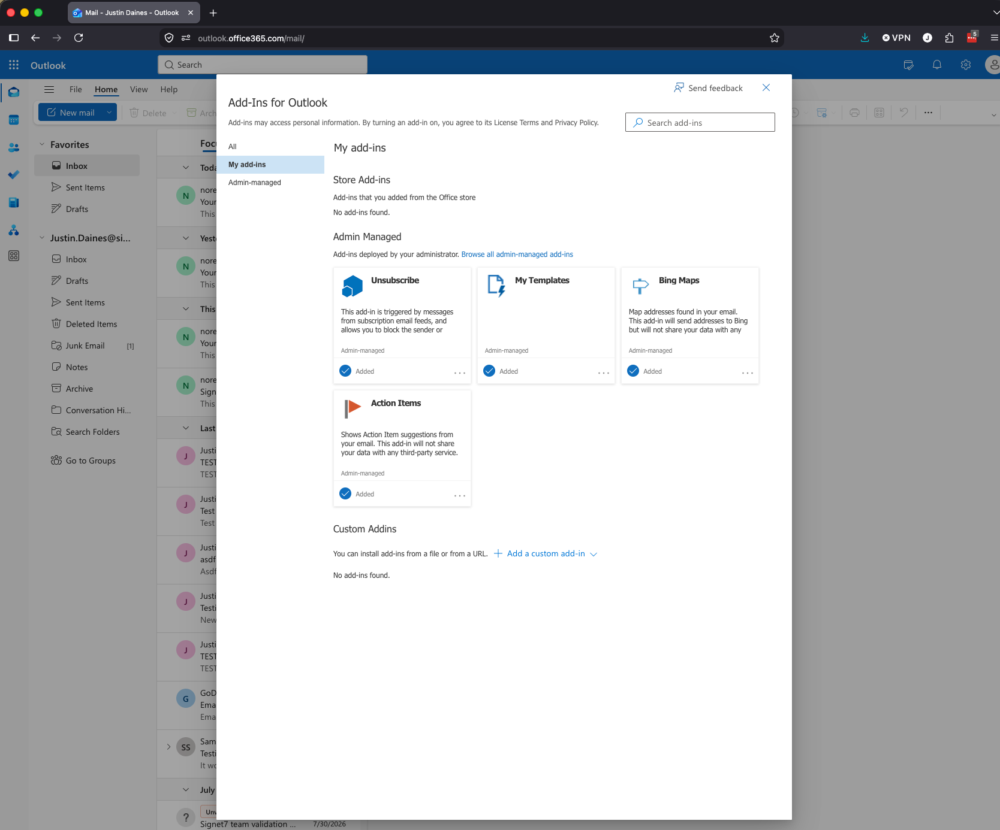
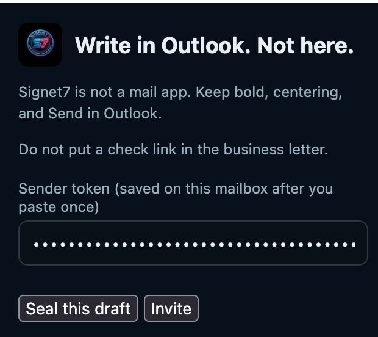

Email Security Made Simple
Signet7 adds a digital signature to your important emails so recipients can verify they're authentic and haven't been tampered with. Think of it as a "wax seal" for digital messages.
Choose Your Path
Select what you want to do with Signet7. No technical knowledge required - we'll guide you through each step.
Verify an Email
Check if an email is authentic and hasn't been changed. No account or installation required.
Save the email file
If the email has a Signet7-sealed.eml attachment: Open and save that attachment file.
If there's no attachment: Save the entire email from your mail app (File → Save As).
Drop and verify
Drag the saved file onto the verification page. Results appear instantly - no waiting or processing time.
Understanding your results:
Important: Signet7 tells you if an email has been tampered with, but doesn't tell you if the content is safe, authorized, or trustworthy. Always use your judgment when acting on email content.
Send Secure Emails
Choose the setup method that works best for your email client. All options work with your existing email account.
Outlook on the Web
Best for Microsoft 365 users. Add digital signatures directly in your web browser.
Desktop Email Apps
For Outlook Desktop, Apple Mail, or Thunderbird. Automatically signs all your outgoing emails.
What you'll need for either option:
- 📧 A business or work email address
- ⏱️ 10-20 minutes of setup time
- 🆓 Free Signet7 account (we'll help you create one)
Setup: Outlook on the Web
Add digital signing to Outlook on the web. Perfect for Microsoft 365 users who want browser-based email security.
Step 1: Create your Signet7 account
- Go to account.signet7.io/account
- Enter your work email address
- Click "Email a sign-in link"
- Check your email and click the link (or enter the 6-digit code)
- Copy your Signet7 token - you'll need this later
Step 2: Install the Signet7 Outlook pane
- Download the manifest file: signet7.io/outlook/manifest.xml
- In the same browser as Outlook, go to aka.ms/olksideload
- Click "My add-ins" → "Custom Addins" → "Add a custom add-in" → "Add from File"
- Select the downloaded manifest.xml file and click "Install"
- Reload Outlook on the web

Step 3: Use Signet7 to sign emails
- Compose a new email in Outlook on the web
- Click the "Enhance Outlook with apps" button in the toolbar
- Select "Signet7" from the apps list
- Paste your Signet7 token in the pane (this saves for future use)
- Click "Sign and send email"
- Wait for confirmation, then click Outlook's "Send" button

✅ You'll know it's working when:
- You see "Sealed. A signed copy is attached" in the Signet7 pane
- Your sent email includes a "Signet7-sealed.eml" attachment
- Recipients can verify your emails at verify.signet7.io
Setup: Desktop Email Apps
Automatically sign all your outgoing emails from Outlook Desktop, Apple Mail, or Thunderbird.
Step 1: Create your account and get credentials
- Create your Signet7 account at account.signet7.io/account
- Copy your Signet7 token
- For Gmail users: Create a 16-letter app password at myaccount.google.com/apppasswords
- For Microsoft 365 users: Your IT team may need to set up Microsoft Entra integration
Step 2: Download and install Signet7 desktop
- Go to the Download page and get the desktop app
- Extract the zip file and run the Signet7 application
- Configure your email settings in the left panel
- Paste your Signet7 token and email credentials
- Click "Save and watch"
- Verify the footer shows "Listening on 127.0.0.1:2525"
Step 3: Configure your email client
For Outlook Desktop:
- Go to File → Account Settings → More Settings → Outgoing Server
- Set SMTP host to
127.0.0.1, port2525 - Turn TLS/SSL off for this connection
- Send a test email
For Apple Mail:
- Add a new "Other Mail Account" (not Google account type)
- Set incoming to your normal email settings
- Set outgoing SMTP to
127.0.0.1:2525with TLS off - Send a test email from this account
For Thunderbird:
- Go to Account Settings → Outgoing Server → Add
- Set host to
127.0.0.1:2525with TLS off - Use this server for your work email account
- Send a test email
✅ You'll know it's working when:
- Signet7 desktop shows "Listening on 127.0.0.1:2525"
- Test emails are automatically signed (no attachment, email itself is signed)
- Recipients can verify your emails by saving and dropping them on the verification tool
Create Your Signet7 Account
Set up your free account to start signing emails. No credit card required.
Enter work email
Use your business or work email address. Personal emails (Gmail, Yahoo, etc.) won't work for signing.
Verify and get token
Click the link in your email or enter the 6-digit code. Copy your Signet7 token for setup.
Important: Keep your Signet7 token secure. This is what signs your emails. If you lose it, you can get a new one from the account page.
Enterprise Deployment
Deploy Signet7 across your organization with centralized management and Microsoft Entra integration.
🏢 IT Administrator Setup
Deploy the Outlook pane to multiple users through Microsoft 365 admin center.
- Microsoft 365 Integrated Apps deployment
- Group-based rollout options
- No individual user setup required
🔐 Microsoft Entra Integration
Enterprise-grade authentication and permissions through your existing Entra setup.
- Single sign-on integration
- Delegated permissions model
- Automated mailbox monitoring
Planning your deployment? Contact our team at support@signet7.io for assistance with large-scale rollouts and custom configurations.
How It Works
Understanding the technology behind Signet7's email security.
🔏 Digital Signatures
Signet7 creates a cryptographic signature for each email that proves authenticity and detects tampering.
🔗 Sender Verification
Recipients can verify that emails actually came from the claimed sender and haven't been modified.
🛡️ Tamper Detection
Any changes to the email content, subject, or attachments after signing will be detected during verification.
Two signing methods:
Outlook Pane Method
- Creates a
Signet7-sealed.emlattachment - Original email remains unsigned
- Recipients verify the attachment file
- Works in web browsers
Desktop App Method
- Signs the entire email message
- No separate attachment needed
- Recipients verify the email itself
- Requires local software
Troubleshooting
Common issues and solutions for Signet7 setup and usage.
❌ Outlook pane not appearing
- Check if manifest.xml was uploaded correctly
- Try refreshing Outlook on the web
- Verify your mailbox supports custom add-ins
- Use aka.ms/olksideload for sideloading
⚠️ Emails not being signed
- Confirm you clicked "Sign and send email" before Send
- Check that your Signet7 token is valid
- For desktop: verify "Listening on 127.0.0.1:2525" appears
- Make sure SMTP is configured correctly
🔍 Verification failing
- For pane method: verify the Signet7-sealed.eml attachment
- For desktop method: save and verify the entire email
- Check that the email hasn't been forwarded or modified
- Ensure you're using the correct file type
🔐 Token or account issues
- Get a fresh token from account.signet7.io
- Verify your work email address is correct
- Check if your token has expired (90-day trial period)
- Contact support for account-related issues
Still need help? Contact our support team at support@signet7.io or check our FAQ page for more solutions.